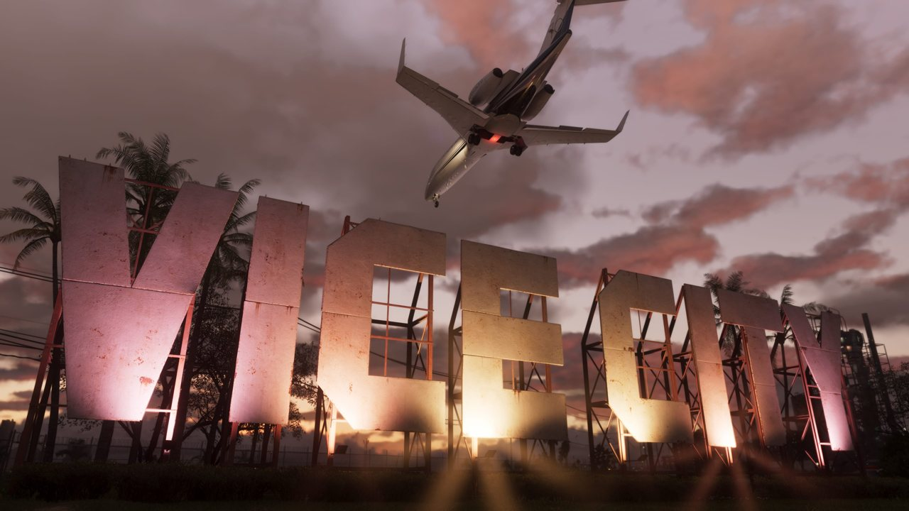
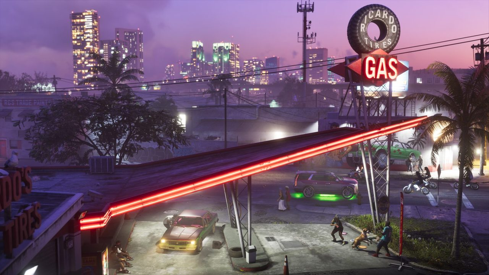
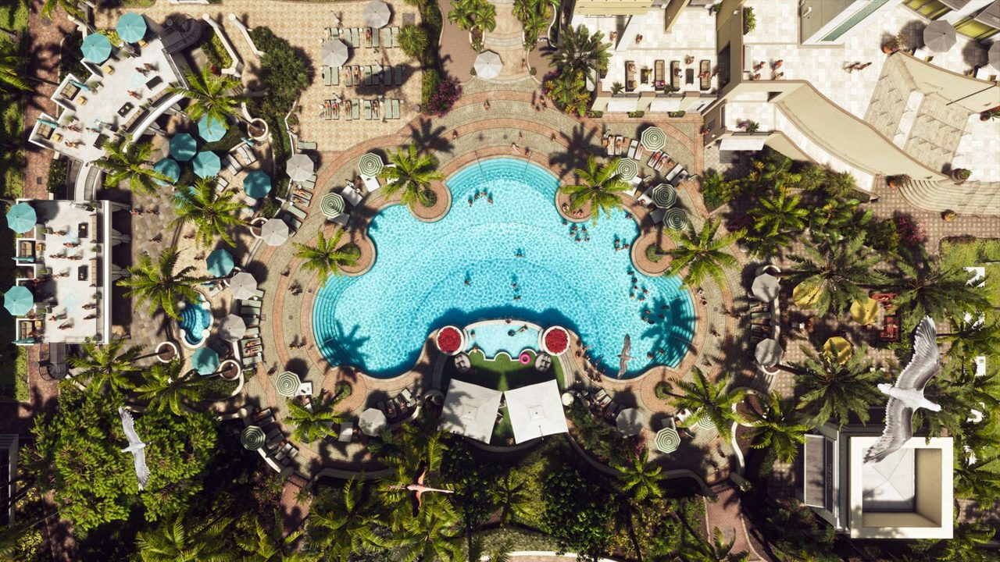
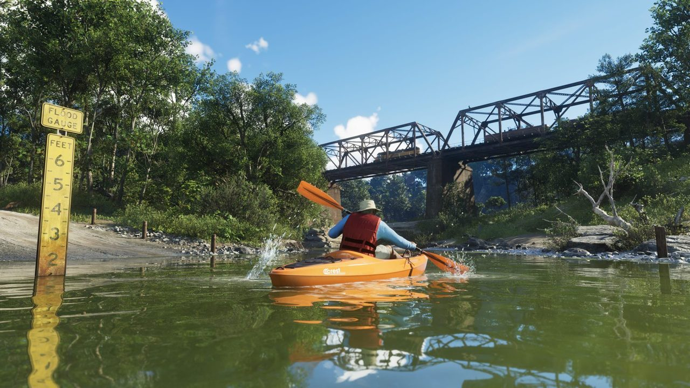
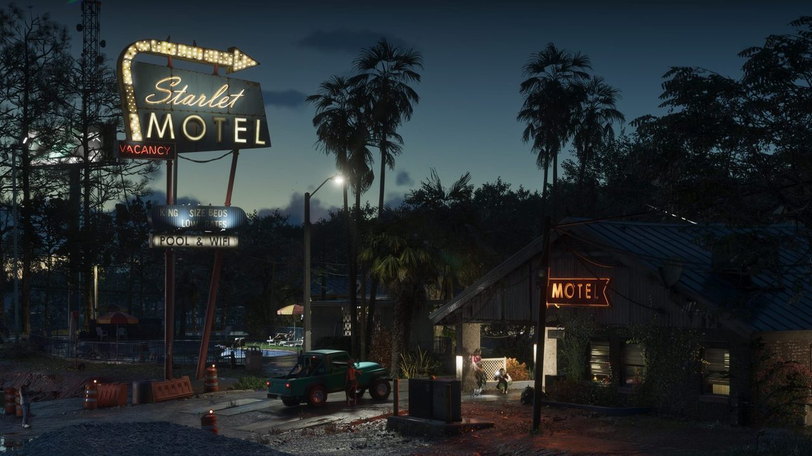
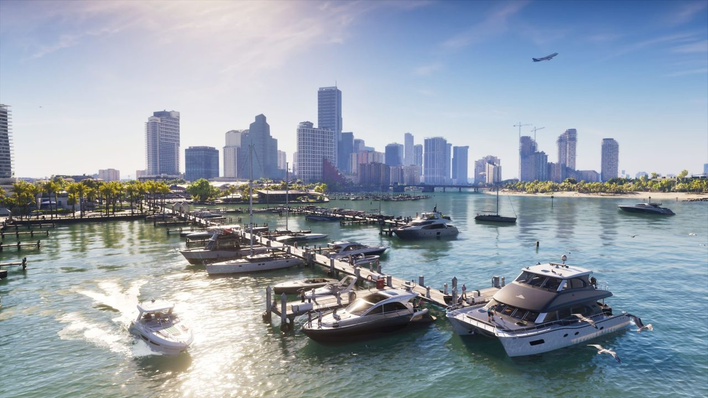
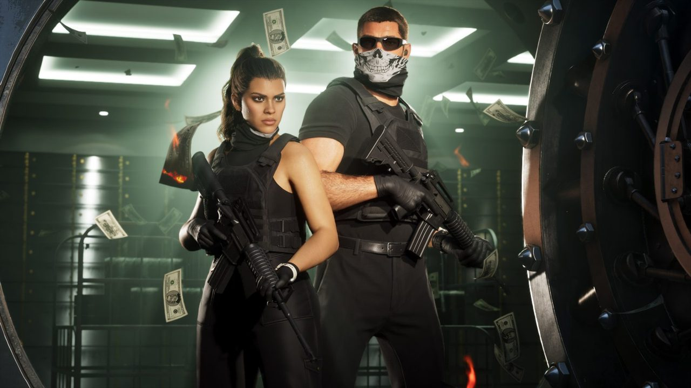
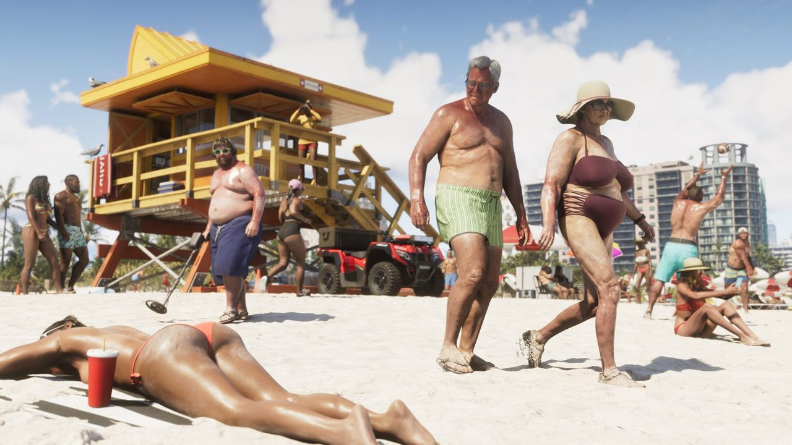
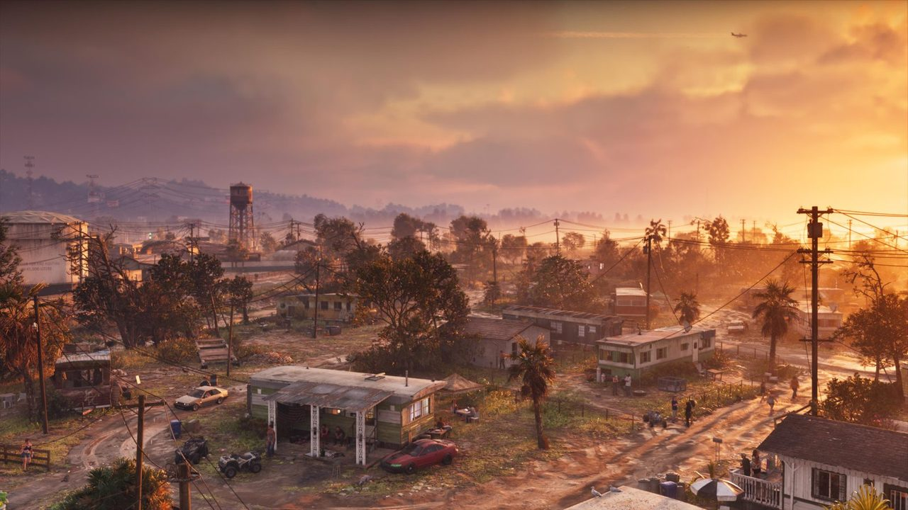
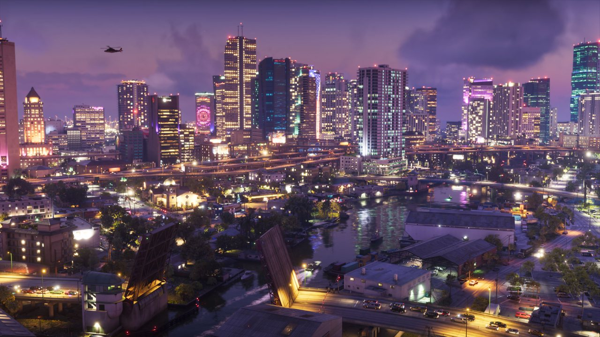

ConfirméPas encore testé par nous
L'œuf de Pâques en haut de l'antenne
Où et comment
Où : Au sommet de la plus haute antenne radio de Vice City. Compte environ 7 minutes de grimpette.
Prends un œuf dans le nid et lance-le dans le vide.



Scooterbros est un service payant de GTA 6 qui remorque et livre un véhicule presque n'importe où. Selon ActuGaming, il est inutilisable quand tu es recherché par la police.
Un joueur affirme avoir grimpé une tour à Leonida, trouvé un nid avec des œufs colorés et déclenché une courte scène en en lançant un sur une voiture en contrebas. Pour l'instant, c'est une rumeur : seul IBTimes UK le relaie, à partir d'une vidéo sur X.
Tu démarres GTA 6 avec 4 emplacements de véhicules personnels. Pour en avoir plus, il faut acheter des garages, et selon Playnews on dépasse la douzaine de places avec tous ceux de Leonida.
Dans le faux réseau social du jeu, un utilisateur râle qu'un jeu inspiré d'un dessin animé de ferme est sorti avant « Race and Chase 7 ». C'est un clin d'œil au tout premier GTA, et selon Journal du Geek on le croise assez tôt.
Deux jours après la sortie, un streamer revendique le premier record du monde de speedrun sur GTA 6. Il aurait tenu plus de 50 heures sans dormir pour boucler le jeu, selon Gamewave.

Dans la maison de Jason, la console du salon fait tourner de vrais petits jeux : un jeu de zombies vu du dessus, Street Trash III : Dézombifier, et un jeu d'énigmes en noir et blanc, Tenebrae Lux. On les a testés sur PS5, captures à l'appui.

Deux jours après la sortie, la note des joueurs de GTA 6 sur Metacritic est tombée autour de 5 sur 10 sur PS5, alors que la presse lui met 99. Entre trolls, critiques sur le couple Jason-Lucia et vraies plaintes techniques, on fait le tri.

Pour débloquer la playlist cachée de Kodak Black dans GTA 6, il faut scanner 4 affiches avec ton téléphone : 3 dans le quartier de La Perle et 1 au Jack of Hearts, à Crosstown. Aucune mission à faire, tu peux t'en occuper dès que Vice City est ouverte.

GTA 6 compte une soixantaine d'espèces d'oiseaux (62 selon Rockstar, d'après Vice et GTA BOOM), qu'on observe aux jumelles pour remplir un carnet de faune. Les amateurs d'ornithologie s'en donnent déjà à cœur joie. Voici comment ça marche et où chercher.

Rockstar et PlayStation fêtent la sortie de GTA 6 ce samedi 21 novembre avec « Grand Theft Auto VI: The Festival » au Mana Wynwood de Miami. Travis Scott, Cardi B, Don Toliver ou Metro Boomin sont annoncés. Pour l'instant, aucune diffusion en direct n'a été annoncée.

C'est officiel : selon Rockstar et Take-Two, GTA 6 a généré 3,79 milliards de dollars de ventes le jour de sa sortie, avec 32,5 millions d'exemplaires écoulés avant même le lancement.

Des joueurs ont entendu des passants de GTA 6 parler des phénomènes étranges du Mont Chiliad, la grande énigme de GTA 5. Ça se passe au début du jeu, dans une mission avec Jason : tends l'oreille. À tester en jeu.

The Vault est une station cachée de GTA 6 : elle ne s'affiche pas dans ta liste de radios tant que tu n'as pas scanné une affiche rouge avec l'appli Waink, à l'intérieur de la boîte de nuit The Vault, dans Downtown Vice City.

Une Elegy widebody, un garage à Crosstown et 10 % de réduction en ville : GTA 6 réserve des bonus solo aux abonnés GTA+. Des joueurs qui ont payé le jeu plein pot parlent de « paywall ». Rockstar n'a pas encore réagi.
Selon une estimation de Sensor Tower relayée par Reuters, GTA 6 s'est vendu à environ 24,6 millions d'exemplaires numériques au soir du jour de sortie, pour près de 2,36 milliards de dollars. Take-Two n'a encore donné aucun chiffre officiel.

GTA 6 cache 4 vrais petits jeux vidéo : trois sur la console JoySystem de la maison, un sur des bornes d'arcade comme celle de Bargain World à Port Gellhorn. En finir un seul débloque le trophée « Stick Fiddler ».

GTA 6 est sorti sans disque, même en boîte. Ryan Cohen, le PDG de GameStop, estime que le tout-numérique « fait du tort aux joueurs », alors que son enseigne en vend pourtant beaucoup.

Non, GTA 6 n'a pas de mode en ligne pour l'instant. Le jeu est sorti le 19 novembre en solo uniquement, et Rockstar n'a donné aucune date pour GTA 6 Online. La seule piste sérieuse parle de 2027, mais elle ne vient pas de Rockstar.
GTA 6 est devenu le lancement de jeu le plus regardé de l'histoire du live. Selon Streams Charts, le jeu a réuni plus de 7,9 millions de spectateurs simultanés sur Twitch, YouTube et Kick, plus de quatre fois l'ancien record.
GTA 6 n'a pas d'option « vue FPS » dans ses menus, mais une manip avec le téléphone permet de basculer en première personne. Voici comment faire sur PS5 et Xbox, et le piège à connaître avant d'essayer.

GTA 6 n'a pas de choix de difficulté, mais ses options d'accessibilité font office de mode facile : ennemis moins résistants, voiture plus solide, mini-jeux simplifiés. Et d'après Push Square, ça ne bloque aucun trophée.
Devant la planque de Jason, un voilier ressemble trait pour trait au Marquis que Michael De Santa possédait dans GTA 5. Et son GPS afficherait Los Santos. Clin d'œil ou coïncidence ? On fait le point, sans spoiler.

Oui, la voix survoltée de la radio années 80 de GTA 6 est celle de « Weird Al » Yankovic. Le roi de la parodie l'a confirmé lui-même : il anime Vice City FM et prête aussi sa voix aux pubs Burger Shot.

Un perroquet qui parle te révèle une cachette d'argent derrière le magasin Three Sheets Liquor, à Key Lento. Il suffit de faire la petite mission du rhum pour Shirley, la voisine de Jason. Voici le chemin exact.
Fini les rencontres tarifées et les copines à collectionner comme dans San Andreas : dans GTA 6, tu ne peux embrasser que ton partenaire. Rockstar assume ce choix au nom de l'histoire, et ça fait parler.
Le jour même où GTA 6 sort sous les éloges, un programmeur de Rockstar Édimbourg raconte dans le Guardian que ses collègues et lui ont peur pour leur emploi. Aucun licenciement n'est annoncé, mais il appelle à se syndiquer.
Ta voiture est sur le toit ? Pas besoin de la laisser brûler : approche-toi, clique sur le stick gauche puis maintiens Carré (PS5) ou X (Xbox) pour la remettre sur ses roues. Et pour t'asseoir, maintiens Rond ou B.

Les fléchettes et le bowling ont disparu de GTA 6. Selon VGC, Rockstar assume : sans le temps de les rendre vraiment bons, l'équipe a préféré ne pas les faire du tout.

La version japonaise de GTA 6 cache la nudité masculine avec un string noir. Les joueurs japonais l'ont repéré dès le lancement, et la comparaison tourne partout sur les réseaux.
Pas de mode 60 FPS, ni même 40 FPS : GTA 6 tourne à 30 images par seconde sur toutes les consoles, PS5 Pro comprise. Rockstar met en cause le processeur des machines.
La Mitsubishi Eclipse verte de Brian O'Conner est cachée dans un garage de villa sur Vespucci Island, à Vice City. Voici comment la récupérer.

Pas de version Xbox One, mais tu peux y jouer en streaming via Xbox Cloud Gaming, à condition d'acheter le jeu. Voici ce qu'il faut savoir.
Ce sont des estimations, pas des chiffres officiels, mais tout indique le plus gros lancement de l'histoire du divertissement.
Sauvegardes perdues, jeu qui se ferme, console qui s'éteint : des joueurs signalent des soucis. Voici quoi faire en attendant un patch.

Planque sous le plancher, plongées au trésor, voitures à revendre : ce qui marche dans les premiers chapitres, sans glitch.

Rockstar a recréé l'immeuble de Miami où vivait Dexter Morgan. On t'explique où le trouver.

Les joueurs fouillent Leonida depuis une journée et les easter eggs tombent déjà. Voici les plus fous.
Le streamer N3on affirme avoir bouclé l'histoire en direct en une nuit. Rockstar, lui, parlait plutôt de 80 heures.
Quelques heures après le déblocage en Nouvelle-Zélande, les joueurs trouvent déjà des easter eggs. Voici ceux qui sont relayés par la presse.

Connexions impossibles, message « services occupés » : des milliers de joueurs PS5 bloqués quelques heures avant minuit.
Caresser les chiens, manger en conduisant, semer la police en changeant de tenue : les réflexes à prendre dès la première heure.

Le jeu se débloque à minuit heure locale. Des milliers de joueurs changent de région pour y jouer 12 heures plus tôt. On t'explique les risques.
99 sur Metacritic, une pluie de 10/10 : les tests sont tombés la veille de la sortie, et Rockstar bat tous les records.

Minuit pile en France, jusqu'à 212 Go, mise à jour PS5 obligatoire et pas de mode online : la checklist avant de lancer ta partie.
Scooterbros est un service payant de GTA 6 qui remorque et livre un véhicule presque n'importe où. Selon ActuGaming, il est inutilisable quand tu es recherché par la police.

Dans GTA 6, tu scannes les animaux, les véhicules et les monuments avec l'application WAiNK de ton téléphone. Selon ActuGaming, la manette vibre plus fort quand tu t'approches d'un élément scannable, et une même voiture avec une autre peinture est à rescanner.
Dans GTA 6, tu te soignes surtout avec le Zombix, un médicament vendu dans les supérettes, et tu renforces tes jauges en mangeant et en buvant avant de partir. Tu peux même le faire en conduisant ou en tirant.
Dans GTA 6, tu sauvegardes à la main depuis le menu pause (Options sur PS5, Menu sur Xbox, puis Jeu > Sauvegarder), n'importe où en monde ouvert, dans l'un des 15 emplacements. Le jeu a aussi une autosave séparée, mais elle ne marche pas pendant une mission ni pendant le prologue.

Les bonus de l'Édition Ultimate de GTA 6 ne sont pas tous dispo dès le début : ils se débloquent chapitre par chapitre, dans des garages, des Ammu-Nation et des boutiques précises. Voici où aller pour chacun, d'après Dexerto.
Tu démarres GTA 6 avec 4 emplacements de véhicules personnels. Pour en avoir plus, il faut acheter des garages, et selon Playnews on dépasse la douzaine de places avec tous ceux de Leonida.
La mention « Testé par nous » n'apparaît que si l'équipe l'a refait en jeu. Une source citée n'est pas un test.
Où : Au sommet de la plus haute antenne radio de Vice City. Compte environ 7 minutes de grimpette.
Prends un œuf dans le nid et lance-le dans le vide.
Où : Washington Island, à Vice City.
Cherche l'immeuble de la série. Un bateau qui ressemble au « Slice of Life » est amarré juste à côté.
Où : Garage d'une villa sur Vespucci Island (Rialto Islands), Vice City.
Force la porte du garage dans la villa, casse la vitre et démarre aux fils la Maibatsu Penumbra FF verte, plaque « HAD YOU ».
Où : Dans la boîte de nuit The Vault, Downtown Vice City (au sud du Jack of Hearts, à l'ouest du NINE1NINE).
Entre dans le club, scanne l'affiche rouge au masque à gaz avec l'appli Waink (R1 / RB) : la station house-techno The Vault s'ajoute à tes radios.
Où : Quartier de La Perle et club Jack of Hearts (Crosstown), à Vice City.
Scanne avec l'appli Waink les 4 affiches : Aunt Zola's Soul Food, TWA Ponya Tattoo, Drip Drops (La Perle) et à l'étage du Jack of Hearts. La playlist de musique haïtienne animée par Kodak Black se débloque.
Où : Dans la maison de Jason.
Lis les pages : l'auteur évoque des événements de 2008, l'année où se déroule GTA 4.
Où : Supérette 24/7 de Key Lento.
Achète-le pour 1,25 $ : des super-héros qui se moquent de l'industrie pharmaceutique, avec le méchant « Dr. Placebo ». Un des 34 magazines et comics à collectionner.
Où : Dans les marais de Grassrivers, au bord des routes du début de partie.
Roule dans le coin, il peut apparaître au détour d'une route, entouré d'une brume verte.
Où : Un avant-poste de recherche sur les crabes abandonné, au sud-ouest de Pelican Valley.
Allume le boîtier électrique, puis tape CLEAVES sur l'ordinateur : le crabe géant attaque, suis les touches à l'écran pour t'en sortir. Une SMG unique t'attend après (voir notre guide des armes uniques).
Où : En pleine mer, loin des côtes.
Reste assez longtemps au large : des aboiements, puis un chien arrive en jet-ski.
Où : Kelly County, sur un chemin de terre à l'est de Port Gellhorn, près du motel Starlet. De nuit, idéalement après 2 h du matin, une fois le premier chapitre terminé.
Repère une voiture arrêtée sur le bas-côté, phares qui clignotent et coffre ouvert. Suis le sentier dans les bois à la lampe torche jusqu'à la lueur bleue, aide la femme que tu y trouves, puis approche de sa voiture : l'OVNI revient et débloque le trophée bronze « The Truth Is Out There ». Marche avec Jason comme avec Lucia.
Où : Quartier de Belville.
Une maison serait identique à une image cachée dans GTA San Andreas Definitive Edition (2021).
Où : Partout, notamment les chats de supérette.
Tu peux les caresser. Mais vole une voiture avec un chat à l'intérieur : il te saute dessus.
Où : Un peu partout, par exemple à la Jacob's Tavern de Millport.
Ouvre l'œil sur la déco : Red Dead et GTA partagent le même univers.
Où : Le podcast Final Act.
Écoute-le : Wade, le copain de Trevor dans GTA 5, y fait une apparition.
Où : Affiché dans Leonida.
Un poster de tournée qui fait un clin d'œil appuyé aux anciens jeux Rockstar.
Où : Amarré devant la planque de Jason, accessible dès le début de la partie.
Approche-toi du voilier (modèle Marquis, comme celui de Michael dans GTA 5) et regarde l'écran du GPS : il afficherait une carte de Los Santos au lieu de Leonida.
Où : Pendant une mission du chapitre 3 où Jason rencontre Booby Ike.
Repère le vieil homme discret en t-shirt Rockstar Games qui se fait appeler « Little Sam ». Les fans y voient le cofondateur de Rockstar ; Rob Nelson, chez Rockstar, a dit ne pouvoir « ni confirmer ni démentir ».
Où : Près de Manifest Canyon, une statue entourée de quatre étalons (l'un porte un cône de chantier).
En approchant, la manette vibrerait et la statue émettrait des bips qui ressemblent à du morse. La plaque parle de « Leonidan Supremacy ». Personne n'a encore trouvé à quoi ça sert.
Où : Dans une quête secondaire autour de fraises (lieu exact pas encore précisé).
Termine la quête : un personnage se met à gonfler comme Hulk, vêtements déchirés compris.
Où : Au début du jeu, pendant une des premières missions de Jason, sur le chemin d'un bar où on lui donne rendez-vous.
Tends l'oreille : deux passants évoquent les phénomènes étranges du Mont Chiliad et un bunker caché avec des jetpacks et des œufs. Le dialogue est peut-être aléatoire.
Où : Dans le réseau social Snapmatic, assez tôt dans le jeu.
Un utilisateur râle qu'un jeu inspiré du dessin animé Barnyard Blue est sorti avant « Race and Chase 7 », ancien nom de travail du premier GTA.
Où : Une tour (radio ou communication) à Leonida, lieu exact inconnu
Grimper jusqu'au sommet (environ 7 minutes selon le joueur), prendre un œuf du nid et le lancer vers le sol : une courte scène montre l'œuf s'écraser sur un véhicule en contrebas.
Aucun secret ne correspond. Change de filtre ou de zone.
Coche ce que tu as trouvé en jeu : ta progression reste enregistrée sur ton appareil. Tu as découvert un secret qui n'est pas dans la liste ? Propose-le juste en dessous (ou en commentaire sur TikTok) : on vérifie et on t'ajoute avec ton pseudo.
GTASTUCE VICE, c'est le fil français de GTA 6 : on suit l'actu en continu, on cite toujours nos sources, et quand ce n'est pas sûr, on te le dit. Pas de leaks, pas de spoilers, pas de glitchs qui font bannir.
Gratuit. Pas de spam. Désinscription en un clic.